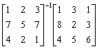
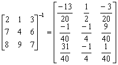

三階逆矩陣乘法、聯立三元一次方程
程式新版
程式編寫日期: 2009年1月13日
程式特點:
● 直接計算三階行列式
● 計算聯立三元一次方程
● 計算一個三階逆矩陣與一個3×n 矩陣的乘積，其中 n為整數
● 亦可以計算三階逆矩陣
● 亦可以計算三階伴隨矩陣
程式需要在 REG Lin 模式下執行，因此在選擇新程式位置後，按 5 1 選用REG Lin模式。
注意: 藍色的英文字為統計模式中的變數( n 按 Shift 1 3， Σx 按 Shift 1 2， Σx2 按 Shift 1 3，Σy 按 Shift 1 → 2，Σxy 按 Shift 1 → 3)，FreqOn 按 Shift MODE ← ← 1。
程式 (218 bytes)
FreqOn: ?→A: ?→B: -1 ; 2-1(A - B DT: 1 ; n + B - 1 DT:
?→C: , C DT: ?→D: 0 , D - C DT: ?→X: , 0 ; X - A - 1 DT:
?→A: ?→B: ?→C: ?→D: While 1: Σx2 nD + ΣyCΣxy +
BΣxA - BnΣxy - CAΣx2 - DΣyΣx→X: ?→X: ?→Y: ?→M:
Ans ; 0 DT: (XnD + YCΣxy + MΣxA - MnΣxy - CAX -
DYΣx)┘Ans◢ ; 0 DT: (Σx2YD + ΣyMΣxy + BXA -
BYΣxy - MAΣx2 - DΣyX)┘Ans◢ ; 0 DT: (Σx2 nM +
ΣyCX + BΣxY - BnX - CYΣx2 - MΣyΣx)┘Ans◢ WhileEnd
例題1: 解聯立方程 :
注意輸入的方法: 先輸入方程式變數的係數，最後才輸入三個常數項
按 Prog 1 再按 1 EXE 1 EXE 1 EXE 1 EXE -1 EXE 2 EXE 1 EXE 3 EXE 1 EXE
(這時顯示?→X及方程組行列式的值 - 2)
6 EXE 5 EXE 10 EXE (顯示x=1) EXE (顯示y=2) EXE (顯示z=3)
計算完結成後，按AC終止程式
例題2: 計算下列的行列式:

按 Prog 1 再按 1 EXE 2 EXE 3 EXE 7 EXE 8 EXE 9 EXE
6 EXE 5 EXE 2 EXE (這時顯示?→X及方程組行列式的值 12)
程式執行完成後，請按AC中止程式。
例題3: 計算

(第一個矩陣，由左至右，上至下輸入)
按 Prog 1 再按 1 EXE 2 EXE 3 EXE 7 EXE 5 EXE 7 EXE 4 EXE 2 EXE 1 EXE
(這時顯示?→X及方程組行列式的值 15)
1 EXE 8 EXE 4 EXE (輸入第二個矩陣，第一欄的數據)
(顯示19/5) EXE (顯示-11/15) EXE (顯示2/5，這三個數值為答案的第一欄)
EXE 3 EXE 2 EXE 5 EXE (輸入第二個矩陣，第二欄的數據)
EXE (顯示-8/5) EXE (顯示37/5) EXE (顯示-17/5，這三個數值為答案的第二欄)
EXE 1 EXE 3 EXE 6 EXE (輸入第二個矩陣，第三欄的數據)
(顯示-1/5) EXE (顯示24/5) EXE (顯示-14/5，這三個數值為答案的第三欄)
程式執行完成後，請按AC中止程式。
所以

例題4: 計算下列矩陣的逆矩陣。

按 Prog 1 再按 2 EXE 1 EXE 3 EXE 7 EXE 4 EXE 6 EXE
8 EXE 9 EXE 7 EXE (這時顯示?→X及行列式的值 40)
1 EXE 0 EXE 0 EXE (計算逆矩陣第一欄的數值)
(顯示 -13/20) EXE (顯示 -1/40) EXE (顯示 31/40) EXE
0 EXE 1 EXE 0 EXE (計算逆矩陣第二欄的數值)
(顯示 1/2) EXE (顯示 -1/4) EXE (顯示 -1/4) EXE
0 EXE 0 EXE 1 EXE (計算逆矩陣第三欄的數值)
(顯示 -3/20) EXE (顯示 9/40) EXE (顯示 1/40)
因此，

計算完結後按AC終止程式，再按 Mode 1返回正常模式。
例題5: 計算下列矩陣的伴隨矩陣。
按 Prog 1 再按 2 EXE 1 EXE 3 EXE 7 EXE 4 EXE 6 EXE
8 EXE 9 EXE 7 EXE (這時顯示?→X及行列式的值 40)
Ans EXE 0 EXE 0 EXE (計算伴隨矩陣第一欄的數值)
(顯示 -26) EXE (顯示 -1) EXE (顯示 31) EXE
0 EXE Ans EXE 0 EXE (計算伴隨矩陣第二欄的數值)
(顯示 20) EXE (顯示 -10) EXE (顯示 -10) EXE
0 EXE 0 EXE Ans EXE (計算伴隨矩陣第三欄的數值)
(顯示 -6) EXE (顯示 9) EXE (顯示 1)
因此，

計算完結後按AC終止程式，再按 Mode 1返回正常模式。
返回 CASIO fx-50FH、fx-3650P II、fx-50FH II及fx-50F PLUS 程式集